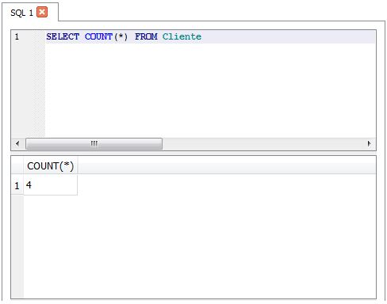

A linguagem SQL (Structured Query Language) é o recurso mais conhecido por DBAs e programadores para a execução de comandos em bancos de dados relacionais, permite acessar e manipular bancos de dados. tornando-se um padrão do American National Standards Institute (ANSI) em 1986, e da International Organization for Standardization (ISO) em 1987.
O SQL é o recurso mais conhecido por DBAs e programadores para a execução de comandos em bancos de dados relacionais. É por meio dela que criamos tabelas, colunas, índices, atribuímos permissões a usuários, bem como realizamos consultas a dados. Enfim, é utilizando a SQL que “conversamos” com o banco de dados.
Essa breve descrição já deixa clara a importância da compreensão e domínio sobre tal recurso. Saiba, também, que ela facilita não apenas a execução de tarefas em SGBDs, mas também o diálogo entre profissionais de banco de dados e programadores.
Com base nisso, aprender sobre SQL, a Structured Query Language, passa a ser fundamental para qualquer um que deseja atuar nessas áreas.
DQL-Linguagem de Consulta de Dados - Define o comando utilizado para que possamos consultar (SELECT) os dados armazenados no banco;
DML-Linguagem de Manipulação de Dados - Define os comandos utilizados para manipulação de dados no banco (INSERT, UPDATE e DELETE);
DDL-Linguagem de Definição de Dados - Define os comandos utilizados para criação (CREATE) de tabelas, views, índices, atualização dessas estruturas (ALTER), assim como a remoção (DROP);
DCL-Linguagem de Controle de Dados - Define os comandos utilizados para controlar o acesso aos dados do banco, adicionando (GRANT) e removendo (REVOKE) permissões de acesso;
DTL-Linguagem de Transação de Dados - Define os comandos utilizados para gerenciar as transações executadas no banco de dados, como iniciar (BEGIN) uma transação, confirmá-la (COMMIT) ou desfazê-la (ROLLBACK).
Para criar um Banco de Dados ou uma tabela utilizamos o comando Create.
Create Database nome_banco;
Create Table nome_da_tabela (
nome varchar(30)
);
Para alterar a estrutura de uma tabela, utilizamos o alter table. Para adicionarmos colunas em nossa tabela utilizamos ADD , conforme exemplo abaixo;

Para adicionarmos dados nas colunas utilizamos os comandos INSERT INTO VALUES conforme exemplo abaixo;
Inserindo alguns Dados:
insert into Cliente values('Joao','m','joao@gmail.com',988638273,'22923110','Maia Lacerda - Estacio - Rio de Janeiro - RJ’);
insert into Cliente values('Celia','f','celia@gmail.com',541521456,'25078869','Riachuelo - Centro - Rio de Janeiro - RJ');
insert into Cliente values('Jorge','m',null,885755896,'58748895','oscar cury - Bom Retiro - Patos de Minas - MG');
insert into Cliente(nome,sexo,endereco,telefone,cpf) values('Lilian','f','Senador Soares - Tijuca - Rio de Janeiro - RJ','947785696',887774856);
Através do comando select * from nome_tabela, é possível visualizar todos os dados inseridos na tabela.

Caracter Coringa “%” : SELECT NOME, SEXO FROM CLIENTE WHERE ENDERECO LIKE '%RJ';
“OR” SELECT NOME, SEXO, ENDERECO FROM CLIENTE WHERE SEXO LIKE 'M' OR ENDERECO LIKE '%RJ';
“AND” SELECT NOME, SEXO, ENDERECO FROM CLIENTE WHERE SEXO LIKE 'M' AND ENDERECO LIKE '%RJ';
SELECT NOME, SEXO, ENDERECO FROM CLIENTE WHERE SEXO LIKE 'F' AND ENDERECO LIKE '%TIJUCA%';
SELECT COUNT(*) FROM CLIENTE;
Atualiza a tabela onde for selecionada.
Para deletar um dado de uma tabela utilizamos o comando Delete.
Delete from Cliente
Where nome = lilian;
Para excluir uma tabela ou Banco de Dados completamente utilizamos o comando Drop.
Drop Table Cliente;
Drop Database Cadastro;